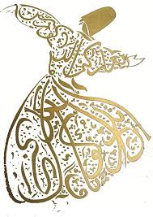
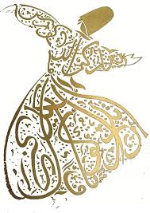

*A Rumi Novel*
The Forty Rules Of Love
by Elif Shafak
"Every true love and friendship is a story of unexpected transformation.
If we are the same person before and after we loved, that means we haven't loved enough..."
Ella Rubinstein has a husband, three teenage children, and a pleasant home. Everything that should make her confident and fulfilled. Yet there is an emptiness at the heart of Ella's life - an emptiness once filled by love.
So when Ella reads a manuscript about the thirteenth-century Sufi poet Rumi and Shams of Tabriz , and his forty rules of life and love, her world is turned upside down. She embarks on a journey to meet the mysterious author of this work.
It is a quest infused with Sufi mysticism and verse, taking Ella and us into an exotic world where faith and love are heartbreakingly explored. . .
Rule 1:
How we see God is a direct reflection of how we see ourselves. If God brings to mind mostly fear and blame, it means there is too much fear and blame welled inside us. If we see God as full of love and compassion, so are we.
Rule 2:
The path to the Truth is a labour of the heart, not of the head. Make your heart your primary guide! Not your mind. Meet, challenge and ultimately prevail over your nafs with your heart. Knowing your ego will lead you to the knowledge of God.
Rule 3:
You can study God through everything and everyone in the universe, because God is not confined in a mosque, synagogue or church. But if you are still in need of knowing where exactly His abode is, there is only one place to look for him: in the heart of a true lover.
Rule 4:
Intellect and love are made of different materials. Intellect ties people in knots and risks nothing, but love dissolves all tangles and risks everything. Intellect is always cautious and advices, ‘Beware too much ecstasy’, whereas love says, ‘Oh, never mind! Take the plunge!’ Intellect does not easily break down, whereas love can effortlessly reduce itself to rubble. But treasures are hidden among ruins. A broken heart hides treasures.
Rule 5:
Most of problems of the world stem from linguistic mistakes and simple misunderstanding. Don’t ever take words at face value. When you step into the zone of love, language, as we know it becomes obsolete. That which cannot be put into words can only be grasped through silence.
Rule 6:
Loneliness and solitude are two different things. When you are lonely, it is easy to delude yourself into believing that you are on the right path. Solitude is better for us, as it means being alone without feeling lonely. But eventually it is the best to find a person who will be your mirror. Remember only in another person’s heart can you truly see yourself and the presence of God within you.
Rule 7:
Whatever happens in your life, no matter how troubling things might seem, do not enter the neighbourhood of despair. Even when all doors remain closed, God will open up a new path only for you. Be thankful! It is easy to be thankful when all is well. A Sufi is thankful not only for what he has been given but also for all that he has been denied.
Rule 8:
Patience does not mean to passively endure. It means to look at the end of a process. What does patience mean? It means to look at the thorn and see the rose, to look at the night and see the dawn. Impatience means to be shortsighted as to not be able to see the outcome. The lovers of God never run out of patience, for they know that time is needed for the crescent moon to become full.
Rule 9:
East, west, south, or north makes little difference. No matter what your destination, just be sure to make every journey a journey within. If you travel within, you’ll travel the whole wide world and beyond.
Rule 10:
The midwife knows that when there is no pain, the way for the baby cannot be opened and the mother cannot give birth. Likewise, for a new self to be born, hardship is necessary. Just as clay needs to go through intense heat to become strong, Love can only be perfected in pain.
Rule 11:
The quest for love changes user. There is no seeker among those who search for love who has not matured on the way. The moment you start looking for love, you start to change within and without.
Rule 12:
There are more fake gurus and false teachers in this world than the number of stars in the visible universe. Don’t confuse power-driven, self-centered people with true mentors. A genuine spiritual master will not direct your attention to himself or herself and will not expect absolute obedience or utter admiration from you, but instead will help you to appreciate and admire your inner self. True mentors are as transparent as glass. They let the light of God pass through them.
Rule 13:
Try not to resist the changes, which come your way. Instead let life live through you. And do not worry that your life is turning upside down. How do you know that the side you are used to is better than the one to come?
Rule 14:
God is busy with the completion of your work, both outwardly and inwardly. He is fully occupied with you. Every human being is a work in progress that is slowly but inexorably moving toward perfection. We are each an unfinished work of art both waiting and striving to be completed. God deals with each of us separately because humanity is fine art of skilled penmanship where every single dot is equally important for the entire picture.
Rule 15:
It’s easy to love a perfect God, unblemished and infallible that He is. What is far more difficult is to love fellow human being with all their imperfections and defects. Remember, one can only know what one is capable of loving. There is no wisdom without love. Unless we learn to love God’s creation, we can neither truly love nor truly know God.
Rule 16:
Real faith is the one inside. The rest simply washes off. There is only one type of dirt that cannot be cleansed with pure water, and that is the stain of hatred and bigotry contaminating the soul. You can purify your body through abstinence and fasting, but only love will purify your heart.
Rule 17:
The whole universe is contained within a single human being-you. Everything that you see around, including the things that you might not be fond of and even the people you despise or abhor, is present within you in varying degrees. Therefore, do not look for Sheitan outside yourself either. The devil is not an extraordinary force that attacks from without. It is an ordinary voice within. If you set to know yourself fully, facing with honesty and hardness.
Rule 18:
If you want to change the ways others treat you, you should first change the way you treat yourself, fully and sincerely, there is no way you can be loved. Once you achieve that stage, however, be thankful for every thorn that others might throw at you. It is a sign that you will soon be showered in roses.
Rule 19:
Fret not where the road will take you. Instead concentrate on the first step. That is the hardest part and that is what you are responsible for. Once you take that step let everything do what it naturally does and the rest will follow. Don’t go with the flow. Be the flow.
Rule 20:
We were all created in His image, and yet we were each created different and unique. No two people are alike. No hearts beat to the same rhythm. If God had wanted everyone to be the same, He would have made it so. Therefore, disrespecting differences and imposing your thoughts on others is an amount to disrespecting God’s holy scheme.
Rule 21:
When a true lover of God goes into a tavern, the tavern becomes his chamber of prayer, but when a wine bibber goes into the same chamber, it becomes his tavern. In everything we do, it is our hearts that make the difference, not our outer appearance. Sufis do not judge other people on how they look or who they are. When a Sufi stares at someone, he keeps both eyes closed instead opens a third eye – the eye that sees the inner realm.
Rule 22:
Life is a temporary loan and this world is nothing but a sketchy imitation of Reality. Only children would mistake a toy for the real thing. And yet human beings either become infatuated with the toy or disrespectfully break it and throw it aside. In this life stay away from all kinds of extremities, for they will destroy your inner balance. Sufis do not go to extremes. A Sufi always remains mild and moderate.
Rule 23:
The human being has a unique place among God’s creation. “I breathed into him of My Spirit,” God says. Each and every one of us without exception is designed to be God’s delegate on earth. Ask yourself, just how often do you behave like a delegate, if you ever do so? Remember, it fells upon each of us to discover the divine spirit inside and live by it.
Rule 24:
Hell is in the here and now. So is heaven. Quit worrying about hell or dreaming about heaven, as they are both present inside this very moment. Every time we fall in love, we ascend to heaven. Every time we hate, envy or fight someone we tumble straight into the fires of hell.
Rule 25:
Each and every reader comprehends the Holy Qur’an on a different level of tandem with the depth of his understanding. There are four levels of insight. The first level is the outer meaning and it is the one that the majority of the people are content with. Next is the Batin – the inner level. Third, there is the inner of the inner. And the fourth level is so deep it cannot be put into words and is therefore bound to remain indescribable.
Rule 26:
The universe is one being. Everything and everyone is interconnected through an invisible web of stories. Whether we are aware of it or not, we are all in a silent conversation. Do no harm. Practice compassion. And do not gossip behind anyone’s back – not even a seemingly innocent remark! The words that come out of our mouths do not vanish but are perpetually stored in infinite space and they will come back to us in due time. One man’s pain will hurt us all. One man’s joy will make everyone smile.
Rule 2:
Whatever you speak, good or evil, will somehow come back to you. Therefore, if there is someone who harbours ill thoughts about you, saying similarly bad things about him will only make matters worse. You will be locked in a vicious circle of malevolent energy. Instead for forty days and nights say and think nice things about that person. Everything will be different at the end of 40 days, because you will be different inside.
Rule 2:
The past is an interpretation. The future is on illusion. The world does not more through time as if it were a straight line, proceeding from the past to the future. Instead time moves through and within us, in endless spirals. Eternity does not mean infinite time, but simply timelessness. If you want to experience eternal illumination, put the past and the future out of your mind and remain within the present moment.
Rule 2:
Destiny doesn’t mean that your life has been strictly predetermined. Therefore, to live everything to the fate and to not actively contribute to the music of the universe is a sign of sheer ignorance. The music of the universe is all pervading and it is composed on 40 different levels. Your destiny is the level where you play your tune. You might not change your instrument but how well to play is entirely in your hands.
Rule 30:
The true Sufi is such that even when he is unjustly accused, attacked and condemned from all sides, he patiently endures, uttering not a sing bad word about any of his critics. A Sufi never apportions blame. How can there be opponents or rivals or even “others” when there is no “self” in the first place? How can there be anyone to blame when there is only One?
Rule 31:
If you want to strengthen your faith, you will need to soften inside. For your faith to be rock solid, your heart needs to be as soft as a feather. Through an illness, accident, loss or fright, one way or another, we are all faced with incidents that teach us how to become less selfish and judgmental and more compassionate and generous. Yet some of us learn the lesson and manage to become milder, while some others end up becoming even harsher than before…
Rule 32:
Nothing should stand between you and God. No imams, priests, rabbits or any other custodians of moral or religious leadership. Not spiritual masters and not even your faith. Believe in your values and your rules, but never lord them over others. If you keep breaking other people’s hearts, whatever religious duty you perform is no good. Stay away from all sorts of idolatry, for they will blur your vision. Let God and only God be your guide. Learn the Truth, my friend, but be careful not to make a fetish out of your truths.
Rule 33:
While everyone in this world strives to get somewhere and become someone, only to leave it all behind after death, you aim for the supreme stage of nothingness. Live this life as light and empty as the number zero. We are no different from a pot. It is not the decorations outside but the emptiness inside that holds us straight. Just like that, it is not what we aspire to achieve but the consciousness of nothingness that keeps us going.
Rule 34:
Submission does not mean being weak or passive. It leads to neither fatalism nor capitulation. Just the opposite. True power resides in submission a power that comes within. Those who submit to the divine essence of life will live in unperturbed tranquillity and peace even the whole wide world goes through turbulence after turbulence.
Rule 35:
In this world, it is not similarities or regularities that take us a step forward, but blunt opposites. And all the opposites in the universe are present within each and every one of us. Therefore the believer needs to meet the unbeliever residing within. And the nonbeliever should get to know the silent faithful in him. Until the day one reaches the stage of Insane-I Kamil, the perfect human being, faith is a gradual process and one that necessitates its seeming opposite: disbelief.
Rule 36:
This world is erected upon the principle of reciprocity. Neither a drop of kindness nor a speck of evil will remain unreciprocated. For not the plots, deceptions, or tricks of other people. If somebody is setting a trap, remember, so is God. He is the biggest plotter. Not even a leaf stirs outside God’s knowledge. Simply and fully believe in that. Whatever God does, He does it beautifully.
Rule 37:
God is a meticulous dock maker. So precise is His order that everything on earth happens in its own time. Neither a minute late nor a minute early. And for everyone without exception, the clock works accurately. For each there is a time to love and a time to die.
Rule 38:
It is never too late to ask yourself, “Am I ready to change the life I am living? Am I ready to change within?” Even if a single day in your life is the same as the day before, it surely is a pity. At every moment and with each new breath, one should be renewed and renewed again. There is only one-way to be born into a new life: to die before death.
Rule 39:
While the part change, the whole always remains the same. For every thief who departs this world, a new one is born. And every descent person who passes away is replaced by a new one. In this way not only does nothing remain the same but also nothing ever really changes. For every Sufi who dies, another is born somewhere.
Rule 40:
A life without love is of no account. Don’t ask yourself what kind of love you should seek, spiritual or material, divine or mundane, Eastern or Western. Divisions only lead to more divisions. Love has no labels, no definitions. It is what it is, pure and simple. Love is the water of life. And a lover is a soul of fire! The universe turns differently when fire loves water.